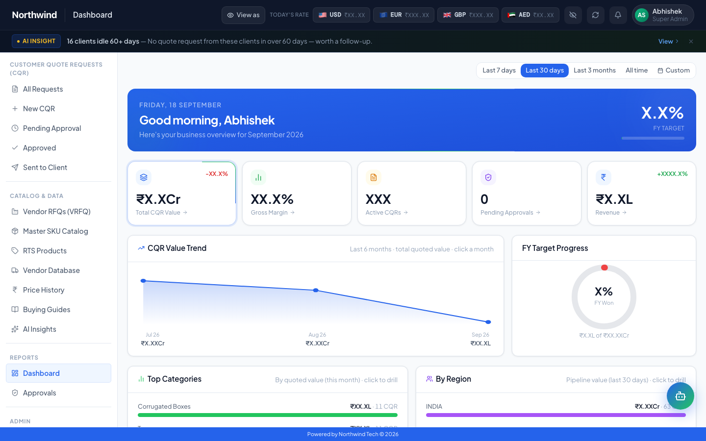
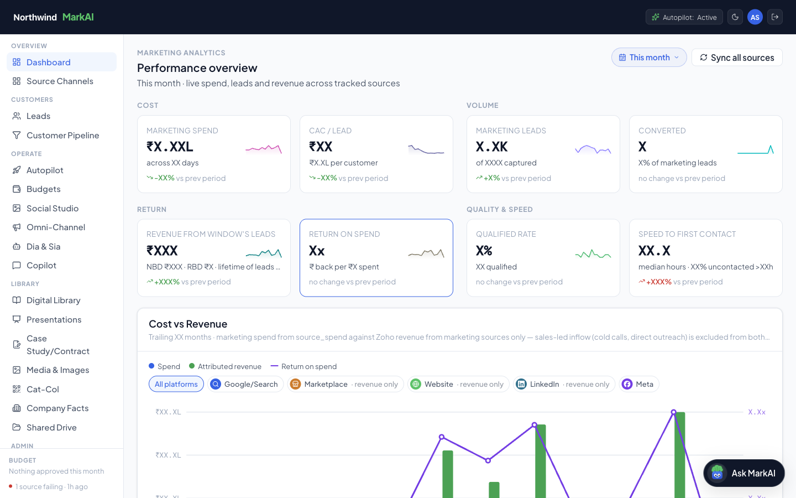
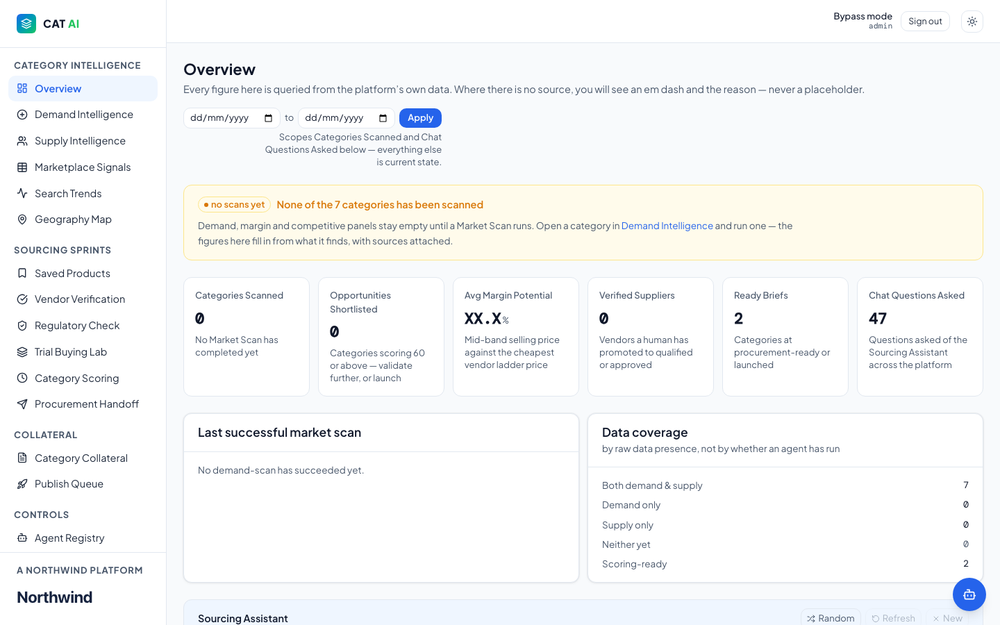
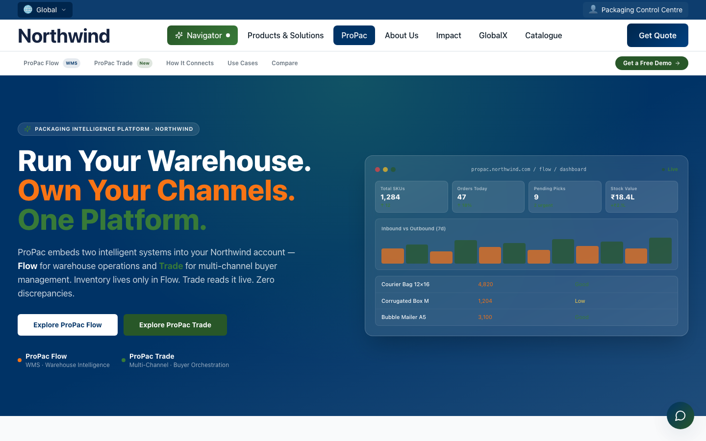
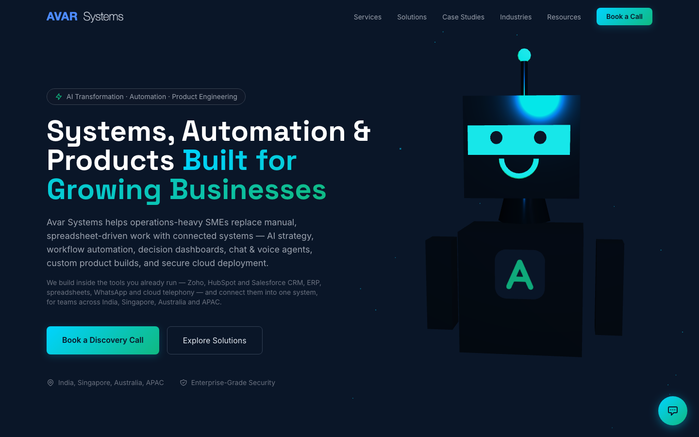
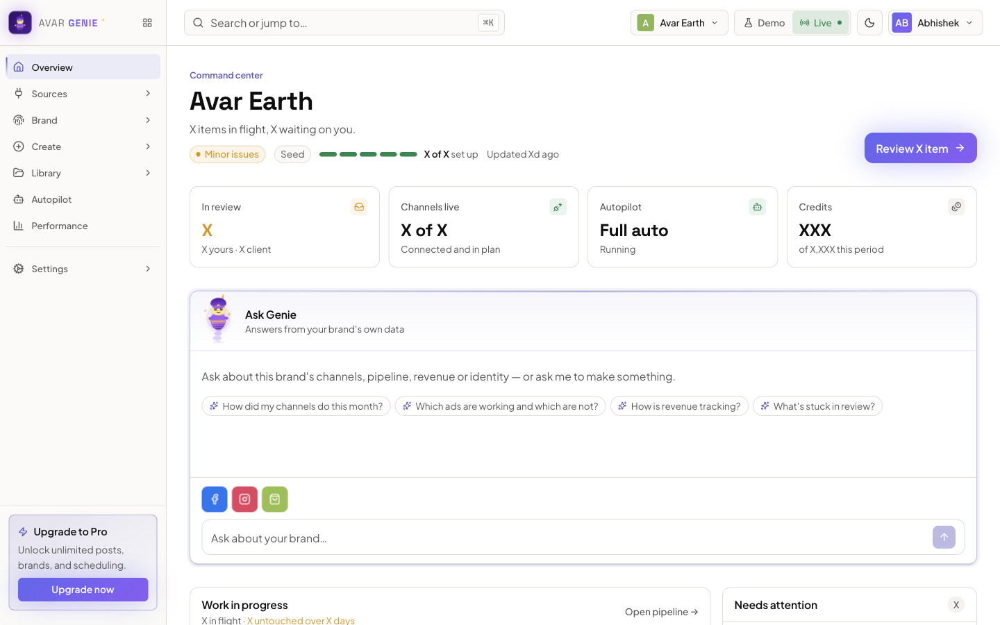

Senior AI Solutions Architect / Forward Deployed Engineer · Singapore
I architect and ship AI platforms that replace manual operations.
These are real systems in production. Each case study walks through the actual screens, in the order a user moves through them.
Senior AI Solutions Architect and Forward Deployed Engineer with 15+ years designing, delivering and deploying enterprise AI, cloud and digital transformation solutions across APAC, the Middle East and the UK. I combine hands-on solution architecture (LLM orchestration, RAG, agentic and multi-agent systems, API and data platform integration) with client-facing consulting, pre-sales solutioning and end-to-end delivery leadership.
Analyse the problem
Start with the business problem, not the tool.
Understand the issues
Sit with the teams who live with it and find what is actually breaking.
Join the dots
Connect the data, systems and people that the problem runs across.
Plan the project
Scope it, sequence it and agree what success looks like.
Build a proof of concept
Prove it works on real data before anyone commits.
Get the go-ahead, then build
With the final go-ahead, take it to production.

Quoting & pricing platform
RFQ & Pricing Platform
Replaced a spreadsheet-driven RFQ and quoting process with one platform: a canonical product data model, hierarchical markup pricing and an embedded AI pricing assistant.
Read the case study
Connected AI operations
7-System AI Ecosystem / MarkAI
Seven connected production systems (lead management, voice, ads, social, lead pipeline, RAG sales knowledge and escalation) running on one shared data layer.
Read the case study
Category intelligence control plane
CAT AI
One control plane for deciding which packaging categories to launch: demand research, supply and vendor analysis, trial buying and scoring.
Read the case study
Vibe-coded web platform
AI-Native Corporate Website & PIE Agent
The company’s global website, vibe-coded in Lovable, with an AI search navigator and PIE, a chat and voice agent on Retell AI, running on Supabase and Vercel.
Read the case studyNexus: Agentic Control Plane
An agentic platform that connects the company’s AI agents and gives management one holistic view of all of them, with a single kill switch.
Property Nex
A platform that turns fragmented property-client data into a data product that commercial companies can buy.

Avar Systems
An end-to-end development firm. I am the consultant between the customer and the build: I find the customer, understand the problem, prove the answer with a POC, then deliver the project.
Avar Earth
Public storefront for Avar Earth, a vegan footwear brand.

Avar Genie
An AI marketing platform that lets brand owners run their social media and ads without knowing how to write prompts.
Models & AI
- Anthropic Claude API
- GPT-4o / OpenAI API
- Google Gemini
- RAG
- Multi-agent systems
Voice, chat & generative media
- Retell AI
- VAPI
- ElevenLabs
- Dify
- Higgsfield
- Gemini & OpenAI image models
Orchestration
- n8n (advanced)
- Make.com
- Zapier
- Webhooks
- REST APIs
Cloud & data
- AWS (EC2, S3, RDS)
- Google Cloud
- Vercel
- Supabase
- SQL
- Python
- Tableau
Business systems
- Salesforce CRM
- Zoho CRM
- Odoo ERP
- Shopify
- Apollo.io
- Apify
- Tavily
Build tooling
- Antigravity IDE
- Cursor
- Claude Code
- Windsurf
- Lovable
- GitHub CI/CD
- 21st.dev
AI & machine learning
- Enterprise AI architecture
- Generative AI & LLMs
- LLM orchestration
- Retrieval-augmented generation
- Agentic & multi-agent systems
- Conversational & voice AI
- Model evaluation
- AI governance & Responsible AI
Consulting & delivery
- Pre-sales & solutioning
- Technical discovery workshops
- Scoping & SOW definition
- End-to-end delivery leadership
- Stakeholder & C-suite advisory
- Architecture handover & enablement
Data & analytics
- Data architecture
- Single-source-of-truth design
- Predictive analytics
- Statistical modelling
- Business intelligence
Enterprise domains
- Logistics & supply chain
- Retail & eCommerce
- B2B SaaS
- Industrial procurement
- Cross-border trade
- Order-to-cash
- EPR & ESG compliance
- Jan 2026 – Present
Director of AI Solutions Architecture & International Expansion
Multi-region B2B packaging & procurement platform · Singapore
- Architected and delivered a 7-system production AI ecosystem from discovery to deployment (GPT-4o, Anthropic Claude, Retell AI, n8n, Supabase, Vercel, AWS), delivering a 60% operational efficiency gain and eliminating 2+ FTE of manual workload.
- Led end-to-end design and delivery of the RFQ & Pricing Platform, an AI-native quotation, vendor RFQ and multi-tier approvals system: stakeholder discovery, solution architecture, a canonical data model (36 sub-categories, 50 specification fields, ~7,900 products) and production deployment on AWS.
- Engineered and deployed 5+ production voice and chat agents (Retell AI, GPT-4o) for inbound handling, lead qualification and logistics escalation, integrated with CRM and order management and targeting a 30% reduction in inbound handling cost.
- Led a cross-functional engineering delivery team, including an 11-agent external vendor engineering programme. Ran the architecture retrospective that traced cascading agent failures to a missing single-source-of-truth data layer, then drove the remediation roadmap.
- Automated an outbound enterprise pipeline generating 10 personalised C-suite emails daily across 25+ countries (Apollo.io, Apify, Tavily, GPT-4o) under a human-in-the-loop review model.
- Built the ASEAN market-entry strategy and delivered go-to-market for 3 new international markets in Q1–Q2 2026.
- Jan 2024 – Present
Principal Consultant
Avar Systems (independent practice) · Singapore
- Delivered production AI and automation solutions for 5+ enterprise and mid-market clients across logistics and eCommerce, reducing manual touchpoints 35–60% per engagement.
- Ran pre-sales and solutioning directly with client executives, translating business problems into target-state architectures within 4-week delivery cycles.
- Owned end-to-end technical delivery (architecture, build, cloud deployment, testing, documented handover and client-team enablement).
- Nov 2023 – Present
Co-Founder & Head of Product and Technology
Avar Earth · Singapore
- Designed and deployed an n8n integration layer across Odoo ERP finance reconciliation, inventory, social publishing and email triage, reducing admin workload 40%.
- Architected agentic fulfilment and logistics workflows with automated exception handling: 24% reduction in order lead time and a 3.8-point CSAT uplift.
- Built an AI competitive-intelligence system scanning 15+ regional market signals daily.
- Apr 2018 – Oct 2023
Co-Founder and Head of Product
Whitley Ecom Pte Ltd · Singapore / International
- Conceived, architected and launched GlobifyX, a SaaS platform for cross-border workflow optimisation: client operational lead times down 30%, first external enterprise client within 60 days of launch.
- Scaled annual revenue from USD 500K to USD 5M (10x) over 5 years.
- Directed operations and expansion across 25+ countries.
- Jan 2015 – Apr 2018
Senior Manager – International Markets
DTDC Express Ltd · International
- Owned a USD 3M P&L across the international portfolio, sustaining 20% year-over-year profit growth.
- Scaled the active country footprint from 12 to 25 through distribution partnerships and enterprise account development.
- 2022
Diploma in Data Science
Steinbeis Akademie, Germany
- 2010
Master of Arts, Marketing
University of Bedfordshire, United Kingdom
- 2009
Bachelor of Arts (Honours), Economics
University of Delhi, India
AI & machine learning
- Claude Platform 101Anthropic
- Claude 101Anthropic
- Generative AI Sprint, AI Generalist Accelerator (NSDC: AI for Founders and Business)Outskill · Dec 2025Prompt engineering, n8n workflow automation, no-code product development, voice-agent orchestration, MCP integration and deployment, multimodal AI
- Machine Learning A–Z: AI, Python & RUdemy · SuperDataScience · Sep 2025
- Machine Learning with Python (ML0101EN)IBM Cognitive Class · ExcelR · Aug 2022
Data & analytics
- Google Data Analytics Professional Certificate (8 courses)Google · Coursera · Aug 2021
- Tableau Data Analyst / Specialist DesktopUdemy · Jul 2022
Security
- Google Cybersecurity Professional Certificate (8 courses)Google · Coursera · Nov 2023
- Cyber Security: From Beginner to ExpertUdemy · Mar 2023